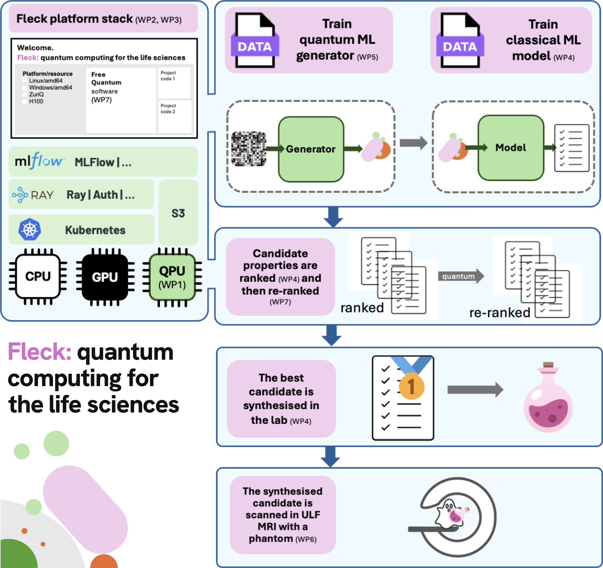

The project
Fleck will use quantum computing to address three key application domains: contrast agent discovery; drug design; and brain cancer detection using ultra-low field (ULF) MR imaging. The project will build a scalable, integrated quantum-AI platform which will automate algorithms between classical (CPU, GPU) and quantum (QPU) resources.
The platform architecture will afford researchers one of the first opportunities to integrate quantum-derived descriptors, molecular dynamics sampling, free-energy calculations and quantum machine learning models into a single design loop. This endeavour will accelerate the development of Switzerland’s first quantum computer, improve application technologies for Switzerland’s only ULF MRI scanner and be the first in the world to provide open-source platform code for quantum-AI single job execution.
Main objectives and vision
To create one-job quantum-AI computing resources that let researchers run calculations for novel anticancer drugs and contrast agents for ultra-low field MRI.
One open-source code
Quantum, AI and classical computing run as a single job, with open-source code.
One shared pipeline
Quantum algorithms for glioblastoma drug and MRI contrast agent design.
One Swiss ecosystem
Hardware, software and end users from all partners on one platform.
Pipeline

The Fleck platform (QuantumBasel, Phoeniqs) contains quantum (ZuriQ) and AI resources. A software stack (QuantumBasel) orchestrates the two.
A data set of molecular descriptors and properties is created by computational chemists (Uni Fribourg) and is passed to quantum physicists (Uni Basel) who train a quantum generative adversarial network (qGAN) to create a generator—a machine that produces candidate contrast agents and contrast agent+drug complexes. These candidates are passed back to the computational chemists (Uni Fribourg), who predict the properties of these new molecules using a classical machine learning model.
The set of all candidates is ranked according to their properties and subsequently re-ranked after classical molecular docking simulations and quantum-enhanced free energy of binding calculations (ETHZ), which use the quantum-AI stack in an iterative loop to deploy the FreeQuantum software.
The best candidate is then synthesised in the lab (Novartis) and combined with a phantom to undergo relaxometry experiments in an ULF MRI scanner (Multiwave Technologies).
Work packages and milestones
- M1Jun 2027Classical compute livePhoeniqs
- M2Sep 2027Molecular database readyUni Fribourg
- M3Mar 2028Glioblastoma drug pipelineUni Basel
- M4Jul 2028Quantum-AI orchestrationQuantumBasel
- M5Sep 2028FreeQuantum in FleckETHZ
- M6Mar 2029Drug conjugates synthesisedNovartis